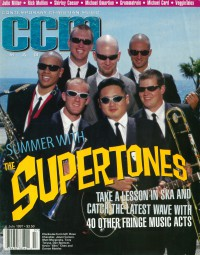
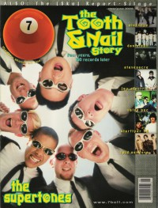

CMnexus: Contemporary Christian culture, music, and media.
|
|
The SupertonesOn the cover|  | July 1997
CCM |
 | May 1998
7ball | Media coverage:- May 1996 in 7ball "Bankshots: The Supertones", by Chad Bonham
- Sum 1996 in HM "The Supertones", by Dan MacIntosh
- Sum 1996 in Garlic Press "Interview: The Supertones"
- Jan 1997 in CCM "Talent Pool: A Modern Rock Romance", by Chad Bonham
- May 1997 in HM "Concert Review: Value Pac, The Supertones", by Dawn Kayne
- Jul 1997 in 7ball "super tones", by Bruce A. Brown
- Jul 1997 in CCM "One Crazy Summer", by Dave Urbanski
- Jul 1997 in CCM "Catch The Wave", by Dave Urbanski
- Jul 1997 in HM "The Supertones", by Brian Vincent McGovern
- Oct 1997 in CCM "In Concert: World Fest 3", by Scott Mathias
- Mar 1998 in Campus Life "Jumpin' Ska High!", by Chris Lutes
- Apr 1998 in CCM "In Concert: Mabee Center, Tulsa, OK", by Chad Bonham
- May 1998 in HM "Concert Review: The Supertones, Stavesacre, Ghoti Hook", by Matt Morrow
- May 1998 in 7ball "Tooth & Nail", by Chad Bonham
- Jul 1998 in FUEL "The Supertones", by Jamie Lee Rake
- Win 1998 in True Tunes News "Ska Primer"
- Feb 1999 in CCM "Super Tone Deaf", by Lou Carlozo
- Mar 1999 in Campus Life "Ska Mania!", by Mark Moring
- Mar 1999 in HM "Changing Their Tune", by Val Sutton
- Spr 1999 in FUEL "The Return of The O.C. Supertones", by David A. Jenison
- Apr 1999 in CCM "On The Beat: Pope Visits St. Louis", by Brian Quincy Newcomb
- Sep 1999 in HM "Concert Review: The Rock Summer Festival"
- Jul 2000 in Campus Life "Our Heroes: Jason Carson (The Supertones)"
- Nov 2000 in CCM "A Year of Kryptonite", by Lou Carlozo
- May 2001 in Campus Life "Chris Rice, Justin McRoberts, Jason Carson (The Supertones), Big Face Grace", by Autumn Flutur
- Jun 2001 in CCM "On Tour: 328 Performance Hall, Nashville, TN", by Lucas W. Hendrickson
- Jul 2001 in CCM "Music That Matters: The Supertones"
- Aug 2004 in CCM "'Revenge' Is Sweet", by Thom Granger
- Feb 2005 in CCM "Insider: Breaking Up Is Hard To Do"
- Jul 2010 in Relevant "Culture: Hey, 2010: 1998 Wants Its Music Back"
- Aug 2010 in CCM Digital "The Fringe: O.C. Supertones", by Andy Argyrakis
- Nov 2012 in HM "The Supertones", by Sarah Arendas Roberts
- Nov 2012 in CCM Digital "New music, same passion, and always and only For the Glory", by Caroline Lusk
Albums & reviews:1996: The Adventures of the O.C. Supertones1997: Supertones Strike Back1998: At The Movies1999: Chase The Sun2000: Loud & Clear2002: Hi Fi Revival2002: Live! Volume One2003: Hi Fi Revival [Video]2004: Revenge of The O.C. Supertones2005: Faith of a Child2005: Unite2008: The Ultimate Collection2010: ReUnite: The Best of the Orange County Supertones2012: For the Glory Award Summary (Nominations / Wins)Dove Awards1998 Dove Awards- Modern Rock/Alternative Album: Supertones Strike Back
1999 Dove Awards2000 Dove Awards- Modern Rock/Alternative Album: Chase The Sun
2001 Dove Awards2003 Dove AwardsBooks about The Supertones- "The Supertones (a.k.a. The O.C. Supertones)" in The Encyclopedia of Contemporary Christian Music (Mark Allan Powell, 2002)
|